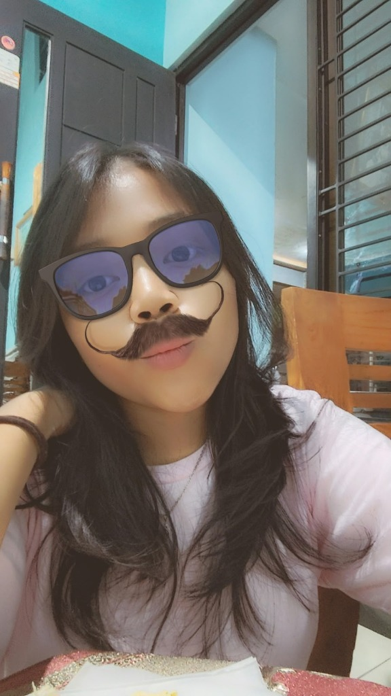
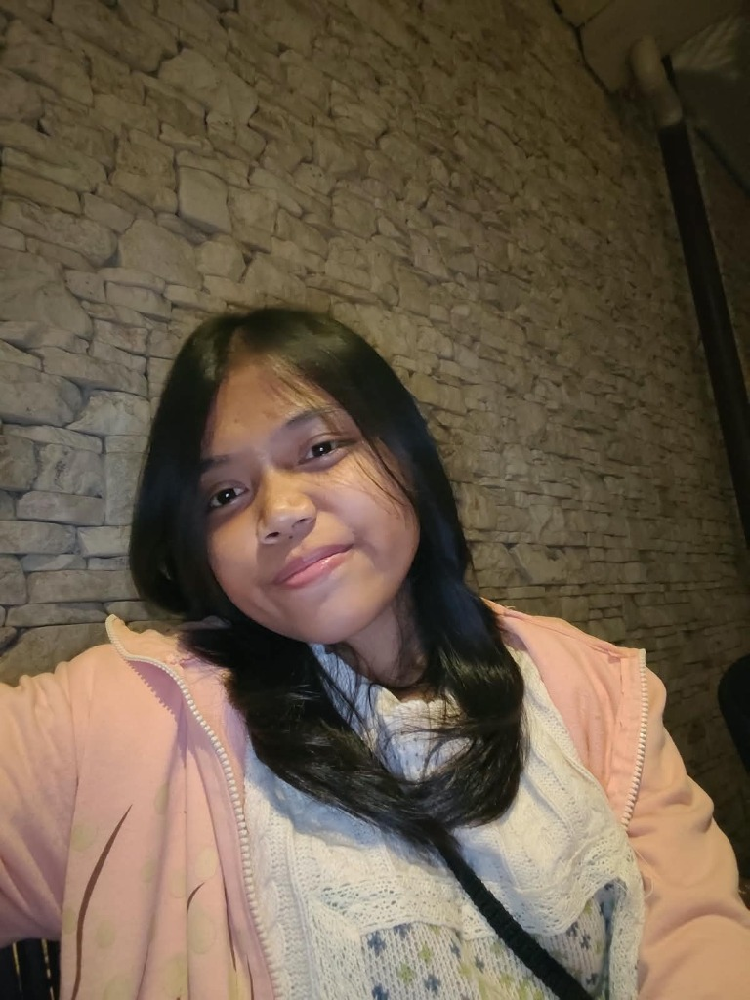
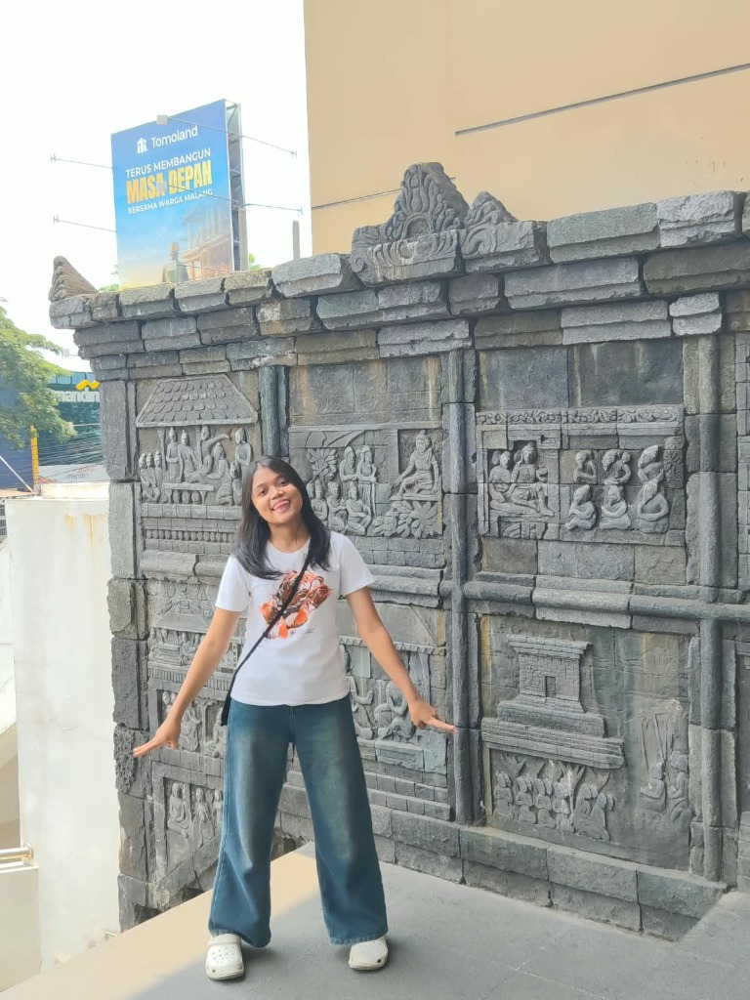
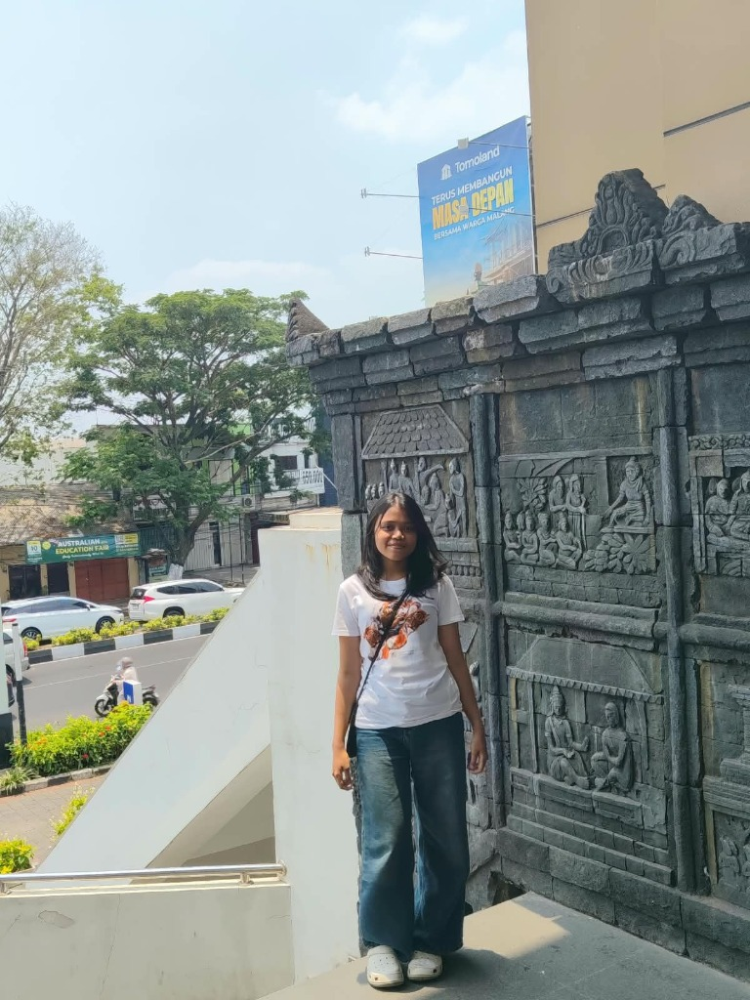

Sastra
Halo semuanya! Salam kenal, aku Sastra. Aku adalah alumni dari SMPN 2 Bantur dan saat ini sedang melanjutkan pendidikan di SMK Telkom Malang (Moklet) dengan mengambil jurusan Teknik Komputer dan Jaringan (TKJ). Aku orangnya ceria, suka banget ketawa, suka mengeksplor hal-hal baru, dan pecinta suasana yang adem! Senang banget bisa berbagi cerita keseharianku di sini~ 🫧

Dunia TKJ di SMK Telkom Malang
Di SMK Telkom Malang, aku udah belajar banyak dasar-dasar TKJ yang seru banget! Mulai dari merangkai dan crimping kabel LAN sendiri pakai tang crimping, menyeting IP address biar perangkat bisa saling terhubung lancar, memahami dasar-dasar jaringan komputer, dan yaa masih banyak lagi hal-hal seru lainnya yang terus aku eksplor setiap hari! 🔌💻✨
🛠️ Crimping Kabel LAN
Mempelajari urutan warna kabel UTP standar (T568B/A), memotong, mengupas jaket, dan crimping konektor RJ-45 hingga dites menyala hijau semua.
🌐 Setting IP Address
Mempelajari cara menyeting alamat IP (IPv4, subnet mask, default gateway, dan DNS) agar semua komputer di jaringan dapat terhubung & berkomunikasi.
📡 Eksplorasi Jaringan & Lainnya
Mengenal peran router, switch, topologi jaringan komputer, troubleshooting kendala koneksi, dan banyak materi IT networking seru lainnya!

Hobi & Hal yang Aku Suka
Selain asyik belajar dunia komputer dan jaringan kabel di sekolah, ini dia beberapa aktivitas dan hal-hal favorit yang paling menggambarkan diriku:
Renang (Swimming)
Berenang adalah salah satu olahraga favoritku! Rasanya segar banget dan bikin pikiran rileks setelah padatnya jadwal sekolah.
Karate
Seni bela diri yang melatih fokus, ketahanan fisik, dan kedisiplinan mental biar selalu percaya diri dan tangguh!
Eksperimen Masak
Suka banget bereksperimen masak-masak di dapur! Nyobain resep unik, meracik bumbu, dan eksplor rasa-rasa baru yang lezat.
Suka Banget Ketawa
Orangnya ceria dan gampang ketawa! Buatku, tawa bareng teman adalah mood booster terbaik.
Suka Kucing (Santai)
Aku suka sama kucing, tapi yaa santai nggak terlalu fanatik banget hehe~ tetap gemas tiap lihat tingkahnya! 🐾
Momen & Keseruan Hari-Hari
Klik foto polaroid di bawah untuk melihat lebih jelas yaa! ✨



Mau ngobrol atau berteman di media sosial?
💌 Yuk Kunjungi Halaman Kontak!